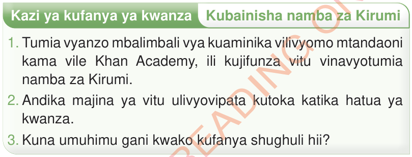

Kazi ya kufanya ya kwanza
Kubainisha namba za Kirumi
1. Tumia vyanzo mbalimbali vya kuaminika vilivyomo mtandaoni kama vile Khan Academy, ili kujifunza vitu vinavyotumia namba za Kirumi.
2. Andika majina ya vitu ulivyovipata kutoka katika hatua ya kwanza.
3. Kuna umuhimu gani kwako kufanya shughuli hii?
